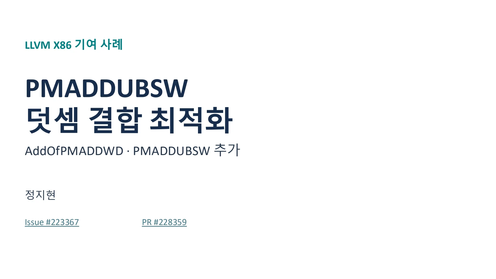
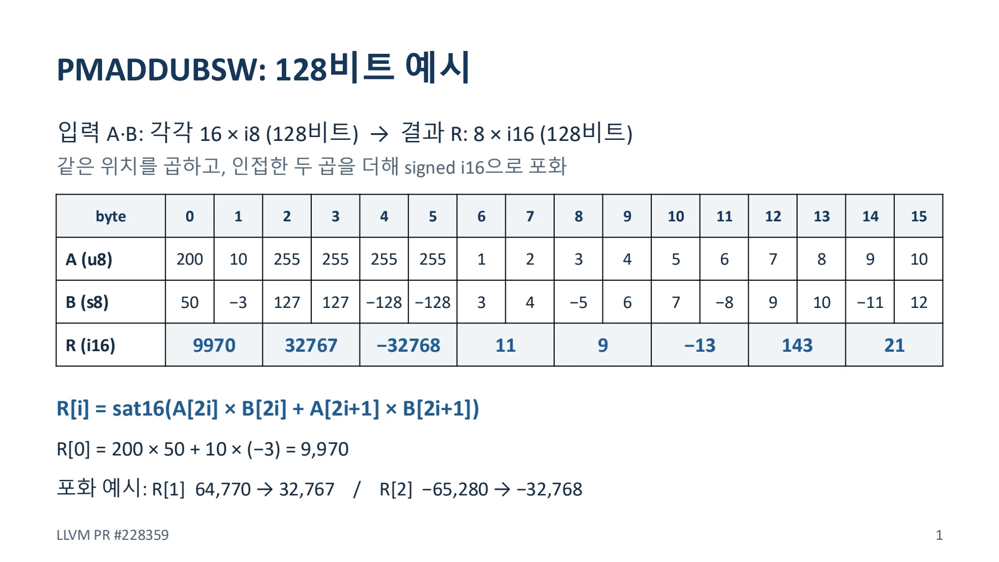
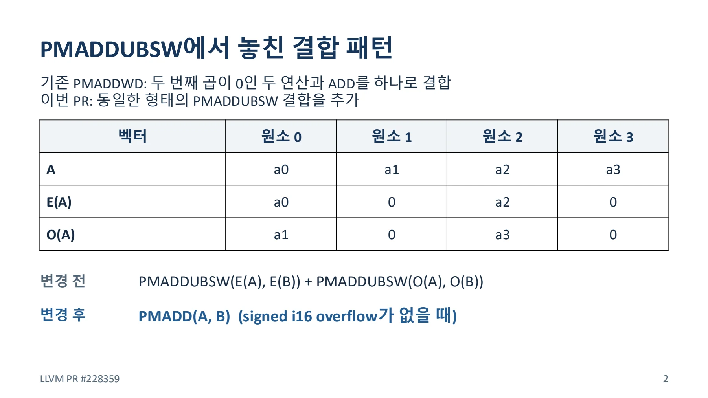
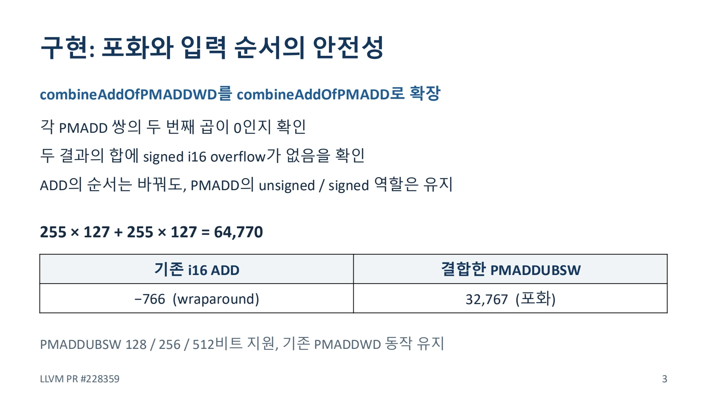
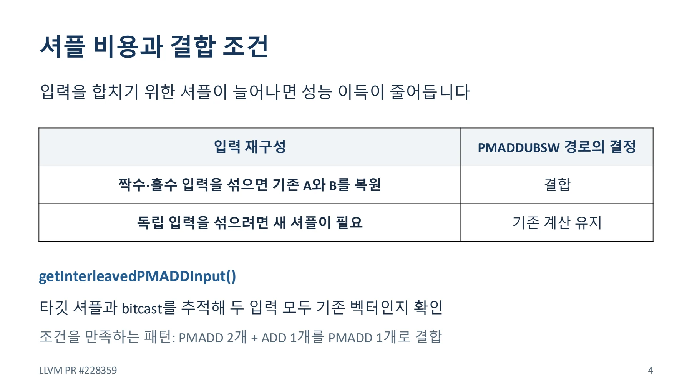
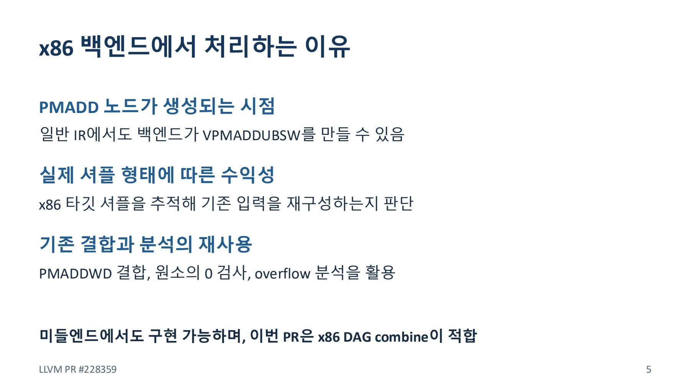

PMADDUBSW 두 개와 덧셈을 하나로 결합하기
포화 연산의 의미와 입력 재구성 비용을 확인해 x86의 multiply-add 패턴을 결합한다.
LLVM_PR228359_PMADDUBSW_.pdf의 전체 내용입니다. 설명·코드·표·검증 기록을 생략하지 않고 옮겼습니다. 그림 안의 문자 인식 결과에는 기호 오류가 있을 수 있어 이미지도 함께 제공합니다.
이 문서의 목차
LLVM X86 기여 사례 / PMADDUBSW / 덧셈 결합 최적화
LLVM X86 기여 사례
PMADDUBSW
덧셈결합최적화
AddOfPMADDWD · PMADDUBSW 추가
정지현
Issue #223367
PR #228359
페이지 배치·기호·도식 확인하기


PMADDUBSW: 128비트 예시 / 입력 A·B: 각각 16 × i8 (128비트) → 결과 R: 8 × i16 (128비트) / 같은 위치를 곱하고, 인접한 두 곱을 더해 signed i16으
PMADDUBSW: 128비트예시
입력 A·B: 각각 16 × i8 (128비트) → 결과 R: 8 × i16 (128비트) 같은위치를곱하고, 인접한두곱을더해signed i16으로포화
byte | 0 | 1 | 2 | 3 | 4 | 5 | 6 | 7 | 8 | 9 | 10 | 11 | 12 | 13 | 14 | 15 |
|---|---|---|---|---|---|---|---|---|---|---|---|---|---|---|---|---|
A (u8) | 200 | 10 | 255 | 255 | 255 | 255 | 1 | 2 | 3 | 4 | 5 | 6 | 7 | 8 | 9 | 10 |
B (s8) | 50 | −3 | 127 | 127 | −128 | −128 | 3 | 4 | −5 | 6 | 7 | −8 | 9 | 10 | −11 | 12 |
R (i16) | 99 | 70 | 327 | 67 | −32 | 768 | 1 | 1 | 9 | − | 13 | 1 | 43 | 2 | 1 |
R[i] = sat16(A[2i] × B[2i] + A[2i+1] × B[2i+1])
R[0] = 200 × 50 + 10 × (−3) = 9,970
포화 예시: R[1] 64,770 → 32,767 / R[2] −65,280 → −32,768
LLVM PR #228359 1
페이지 배치·기호·도식 확인하기


PMADDUBSW에서 놓친 결합 패턴 / 기존 PMADDWD: 두 번째 곱이 0인 두 연산과 ADD를 하나로 결합 / 이번 PR: 동일한 형태의 PMADDUBSW 결합을 추가
PMADDUBSW에서놓친결합패턴
기존PMADDWD: 두번째곱이0인두연산과ADD를하나로결합 이번PR: 동일한형태의PMADDUBSW 결합을추가
벡터 | 원소0 | 원소1 | 원소2 | 원소3 |
|---|---|---|---|---|
A | a0 | a1 | a2 | a3 |
E(A) | a0 | 0 | a2 | 0 |
O(A) | a1 | 0 | a3 | 0 |
변경전
변경후
PMADDUBSW(E(A), E(B)) + PMADDUBSW(O(A), O(B))
PMADD(A, B) (signed i16 overflow가 없을 때)
LLVM PR #228359 2
페이지 배치·기호·도식 확인하기


구현: 포화와 입력 순서의 안전성 / combineAddOfPMADDWD를 combineAddOfPMADD로 확장 / 각 PMADD 쌍의 두 번째 곱이 0인지 확인
구현: 포화와입력순서의안전성
combineAddOfPMADDWD를 combineAddOfPMADD로 확장
각PMADD 쌍의두번째곱이0인지확인
두 결과의 합에 signed i16 overflow가 없음을 확인
ADD의 순서는 바꿔도, PMADD의 unsigned / signed 역할은 유지
255 × 127 + 255 × 127 = 64,770
기존 i16 ADD | 결합한 PMADDUBSW |
|---|---|
−766 (wraparound) | 32,767 (포화) |
PMADDUBSW 128 / 256 / 512비트지원, 기존PMADDWD 동작유지
LLVM PR #228359 3
페이지 배치·기호·도식 확인하기


셔플 비용과 결합 조건 / 입력을 합치기 위한 셔플이 늘어나면 성능 이득이 줄어듭니다 / 입력 재구성 PMADDUBSW 경로의 결정
셔플비용과결합조건
입력을합치기위한셔플이늘어나면성능이득이줄어듭니다
입력재구성 | PMADDUBSW 경로의결정 |
|---|---|
짝수·홀수입력을섞으면기존A와B를복원 | 결합 |
독립입력을섞으려면새셔플이필요 | 기존계산유지 |
getInterleavedPMADDInput()
타깃셔플과bitcast를추적해두입력모두기존벡터인지확인
조건을만족하는패턴: PMADD 2개+ ADD 1개를PMADD 1개로결합
LLVM PR #228359 4
페이지 배치·기호·도식 확인하기


x86 백엔드에서 처리하는 이유 / PMADD 노드가 생성되는 시점 / 일반 IR에서도 백엔드가 VPMADDUBSW를 만들 수 있음
x86 백엔드에서처리하는이유
PMADD 노드가생성되는시점
일반IR에서도백엔드가VPMADDUBSW를만들수있음
실제셔플형태에따른수익성
x86 타깃셔플을추적해기존입력을재구성하는지판단
기존결합과분석의재사용
PMADDWD 결합, 원소의0 검사, overflow 분석을활용
미들엔드에서도구현가능하며, 이번PR은x86 DAG combine이적합
LLVM PR #228359 5
페이지 배치·기호·도식 확인하기


핵심 원리와 편집 주석
명령어의 의미
PMADDUBSW는 unsigned byte와 signed byte를 원소별로 곱한다. 인접한 두 곱을 더한 뒤 signed i16 범위로 포화한다.
R[i] = sat16(A[2i] * B[2i] + A[2i+1] * B[2i+1])예를 들어 64,770은 32,767로 포화한다. 일반 i16 ADD의 wraparound 결과와 같지 않다.
결합할 패턴
짝수·홀수 입력을 나누어 각각 두 번째 곱이 0이 되도록 만든 PMADDUBSW 두 개와 뒤의 ADD가 대상이다. 조건이 맞으면 원래 입력의 PMADDUBSW 하나로 바꿀 수 있다.
- 각 PMADD 쌍의 두 번째 곱이 0인지 확인한다.
- 두 결과를 더할 때 signed i16 overflow가 없는지 확인한다.
- unsigned 입력과 signed 입력의 역할을 유지한다.
- 입력 재구성에 새 셔플이 필요한지 확인한다.
포화와 wraparound의 반례
| 계산 | 결과 |
|---|---|
| 255×127 + 255×127 | 64,770 |
| 일반 i16 ADD로 표현한 결과 | -766 |
| 포화 PMADDUBSW 결과 | 32,767 |
overflow 조건을 빼면 위처럼 서로 다른 결과가 나온다. ADD 피연산자는 교환할 수 있어도 PMADD의 signed·unsigned 입력을 무조건 교환할 수는 없다.
구현과 수익성
자료는 기존 combineAddOfPMADDWD를 combineAddOfPMADD로 확장하는 과정을 설명한다. PMADDUBSW의 128·256·512비트 형태를 처리하고 기존 PMADDWD 동작을 유지한다.
getInterleavedPMADDInput은 타깃 셔플과 bitcast를 추적한다. 두 입력이 기존 vector를 복원하는 경우에 결합한다. 독립 입력을 섞기 위해 새 셔플이 필요하면 기존 계산을 유지한다.
문서 전문과 버전
- PDFPDF 원자료 · 6쪽LLVM_PR228359_PMADDUBSW_.pdf
각 자료는 별도의 버전입니다. 같은 주제라도 구현 상태·설명 범위·수치가 다를 수 있습니다.
관련 이슈와 PR
구현·병합 상태와 측정값은 해당 제출 자료의 작성 시점 기준입니다.